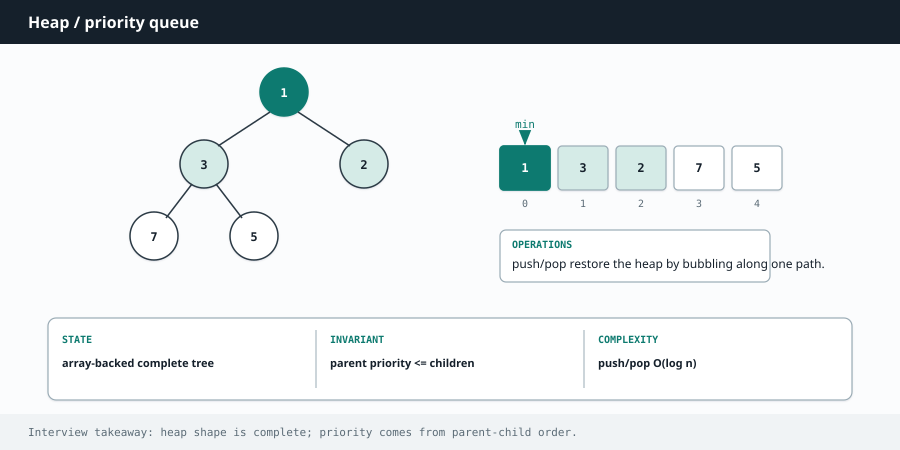

Competitive Programming
Chapter 10
Heaps and priority queues

A heap is a container that always hands you the smallest (or largest) item first, and lets you add new items cheaply. It is the perfect tool whenever you repeatedly need "the best remaining thing" without sorting everything each time. a min-heap: every parent is smaller than its children 1 3 2 7 5 4 stored as a plain array, no pointers needed: 1 3 2 7 5 4 The smallest value is always at the top. Adding or removing takes O(log n).
R E A C H F O R A H E A P W H E N Y O U S E E
"Kth largest" or "Kth smallest". "Top K frequent". "Merge K sorted lists". "Find the running median". Anything where you keep needing the current best or worst item as data streams in. If you catch yourself wanting to sort inside a loop, a heap is almost always the fix.
The one thing to remember about the two languages
Python's heapq is a min-heap: it gives you the smallest first. To get a max-heap, push the negatives of your numbers. Java's PriorityQueue is a min-heap by default too, but you can pass a comparator to flip it to a max-heap.
Worked example: Kth largest element
You want the Kth biggest number. The clean trick is to keep a min-heap of only the K largest numbers seen so far. Whenever it grows past K, pop the smallest. At the end, the smallest thing in that heap of size K is exactly the Kth largest overall. This runs in O(n log k), better than sorting the whole array when k is small.
import heapq
def find_kth_largest(nums, k):
heap = [] # min-heap holding the k biggest so far
for x in nums:
heapq.heappush(heap, x)
if len(heap) > k:
heapq.heappop(heap) # drop the smallest, keep the top k
return heap[0] # smallest of the top k = kth largest
int findKthLargest(int[] nums, int k) {
PriorityQueue<Integer> heap = new PriorityQueue<>(); // min-heap
for (int x : nums) {
heap.offer(x);
if (heap.size() > k) heap.poll(); // drop the smallest
}
return heap.peek(); // kth largest
}
Worked example: top K frequent elements
Count how often each value appears, then use a heap to pull out the K most frequent. This pairs the frequency-counting idea from the arrays chapter with a heap.
import heapq
from collections import Counter
def top_k_frequent(nums, k):
counts = Counter(nums) # value -> how many times
# nlargest gives the k items with the biggest count
return [val for val, _ in heapq.nlargest(k, counts.items(), key=lambda p:
p[1])]
int[] topKFrequent(int[] nums, int k) {
Map<Integer, Integer> counts = new HashMap<>();
for (int x : nums) counts.merge(x, 1, Integer::sum);
// min-heap ordered by frequency, keep only k biggest
PriorityQueue<int[]> heap =
new PriorityQueue<>((a, b) -> a[1] - b[1]);
for (Map.Entry<Integer, Integer> e : counts.entrySet()) {
heap.offer(new int[]{ e.getKey(), e.getValue() });
if (heap.size() > k) heap.poll();
}
int[] result = new int[k];
for (int i = 0; i < k; i++) result[i] = heap.poll()[0];
return result;
}
M I N - H E A P F O R T H E L A R G E S T , M A X - H E A P F O R T H E S M A L L E S T It feels backwards but it is the key insight for "top K" problems. To keep the K largest items, use a min-heap of size K and pop the smallest whenever it overflows. The heap top is the weakest survivor, so anything weaker gets thrown out. Flip the logic for the K smallest.
W A T C H O U T
A heap is not sorted. It only guarantees the top element is the min or max. If you iterate over a heap's internal array you will not get sorted order. Also, in Python remember to negate values for a max-heap and negate again when you read them back, which is an easy place to introduce a sign bug.
Deeper Intuition
Why two heaps give a running median
A heap only promises you the single extreme element, the smallest or the largest, in O(1), while pushes and pops cost O(log n). For a running median you keep two heaps: a max-heap holding the smaller half of the numbers and a min-heap holding the larger half, kept balanced in size. The median is then always sitting right at their tops, either the top of the bigger heap or the average of the two tops. biggest of the low half smallest of the high half 3 4 median (3 + 4) / 2 max-heap: lower half min-heap: upper half Keep the smaller half in a max-heap and the larger half in a min-heap. The median sits at the two tops.
Another worked example: Find Median from Data Stream
Numbers arrive one at a time and you must report the median at any point. Push each number so the low half stays in a max-heap and the high half in a min-heap, rebalancing so their sizes differ by at most one. The median is read straight off the tops.
import heapq
class MedianFinder:
def __init__(self):
self.low = [] # max-heap via negatives, the smaller half
self.high = [] # min-heap, the larger half
def add_num(self, num):
heapq.heappush(self.low, -num)
heapq.heappush(self.high, -heapq.heappop(self.low)) # balance value
if len(self.high) > len(self.low): # balance size
heapq.heappush(self.low, -heapq.heappop(self.high))
def find_median(self):
if len(self.low) > len(self.high):
return -self.low[0]
return (-self.low[0] + self.high[0]) / 2
class MedianFinder {
PriorityQueue<Integer> low = new PriorityQueue<>
(Collections.reverseOrder());
PriorityQueue<Integer> high = new PriorityQueue<>();
void addNum(int num) {
low.offer(num);
high.offer(low.poll()); // balance value
if (high.size() > low.size()) // balance size
low.offer(high.poll());
}
double findMedian() {
if (low.size() > high.size()) return low.peek();
return (low.peek() + high.peek()) / 2.0;
}
}
Going Deeper
What kinds of problems this solves
U S E T H I S P A T T E R N F O R
Whenever you repeatedly need the smallest or largest item without fully sorting: top K, the kth largest, a running median, merging many sorted streams, or scheduling by priority.
| Problem type | Classic examples |
|---|---|
| Top K and Kth | Kth Largest Element in an Array, Top K Frequent Elements, K Closest Points to Origin, Kth Largest in a Stream |
| Merge and schedule | Merge k Sorted Lists, Task Scheduler, Reorganize String, Meeting Rooms II |
| Two heaps | Find Median from Data Stream, Sliding Window Median, IPO |
The algorithm, in a bit more detail
A heap keeps the extreme element (smallest for a min heap) always at the top, ready in O(1), while pushing and popping cost only O(log n). It does not keep everything sorted, it just guarantees the top, which is exactly what you want when you only ever need the current best.
The key pattern for top K is a heap of size k. Keep pushing, and whenever the heap grows past k, pop the worst. What remains is the k best, computed in O(n log k) instead of sorting everything in O(n log n). For a running median, hold a max heap of the lower half and a min heap of the upper half, and keep their sizes balanced so the median sits at the tops.
Variations you will run into
You will use a min heap, a max heap (in Python, push negatives since it only has a min heap), a fixed size k heap for top K, and the two heap setup for medians. Storing tuples like (priority, item) lets the heap order by the first field.
Edge cases and gotchas
Python heapq is a min heap only, so negate values or use a key wrapper to get max heap behavior.
When you push tuples, make sure the tie breaking field is comparable, or add a counter to avoid comparing raw objects.
Building a heap from a list with heapify is O(n), which is cheaper than pushing one by one.
For top K largest, a min heap of size k is correct, since you pop the smallest to keep the largest k.